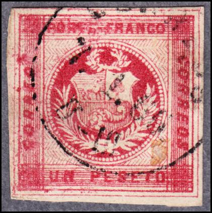
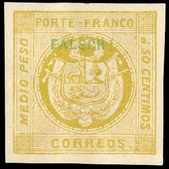
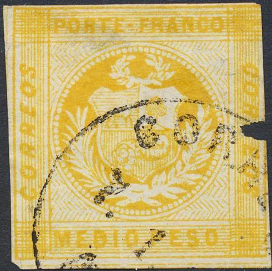
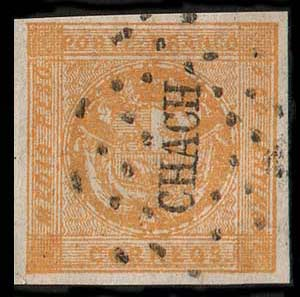
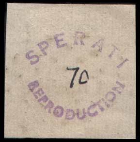
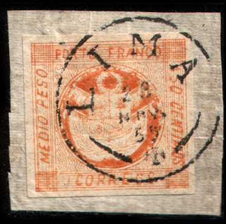
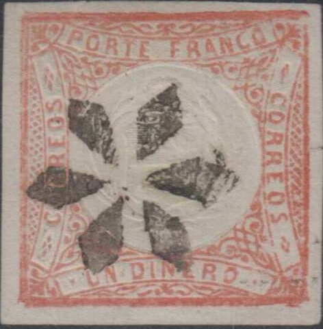
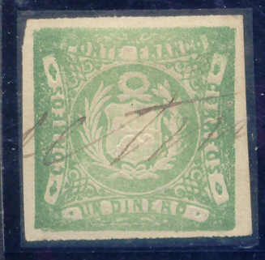
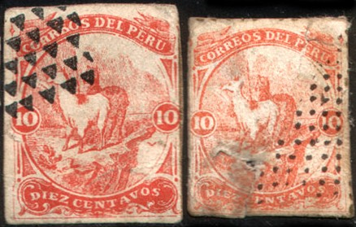
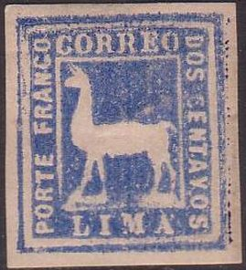

Pérou
Return To Catalogue - Peru 1873 llama and 1871 train issue - Peru 1874 -1894 - Peru 1895 -1920 - Miscellaneous - Local stamps, part 1 - Local stamps, part 2 - PSNC stamps - fiscal stamps
Note: on my website many of the
pictures can not be seen! They are of course present in the
catalogue;
contact me if you want to purchase the catalogue.
1 din blue (two types, wavy or zigzag lines in background) 1 peseta red (two types, wavy or zigzag lines in background) 1/2 peso (0.50 centimos) yellow to red
The plates of the 1 d and 1 p values with the zigzag lines in the background were worn very quickly and the background pattern behind the horn has disappeared in later issues and appears as white only. These plates were retouched (in 1860?) and can be recognized by the fact that the zigzag lines do not touch each other any more:

Retouched 1 d plate, zigzag lines behind the circle do not touch
each other any more
Value of the stamps |
|||
vc = very common c = common * = not so common ** = uncommon |
*** = very uncommon R = rare RR = very rare RRR = extremely rare |
||
| Value | Unused | Used | Remarks |
With wavy lines in background |
|||
| 1 din | RR | R | Also exists with 'UN DINERO' larger: RR |
| 1 peseta | RRR | RR | Also exists with 'UNA PESETA' larger: RR |
| 1/2 peso | RRR | RRR | Misprint in red: RRR |
| With zigzag lines
in background (also exists retouched with the zigzag lines broken at the corners) |
|||
| 1 din | RR | R | |
| 1 peseta | RRR | RR | |
Cancels:


"LIMA", "CALLAO", "PASCO",
'TRUXILLO", "PAITA" and "AYACUO"
cancels.
There exists a forgery of the "UNA PESETA" with wrong inscription "UN PESETO":


("UN PESETO")
A Senf forgery of the 1/2 peso, with green "FALSCH" (=forged in German) overprint:

Senf forgery with a green 'FALSCH!' overprint.
The above Senf forgery is described in Album Weeds (as the second forgery of the 1/2 p).

I've been told that this is a forgery, I have no further
information


Some other forgeries (made by Fohl?)
The bottom inscription of the 1/2 p should be "CORREOS", it is "MEDIO PESO" in the above forgery. In the 1 P, the inscription is "UN PESETO" instead of "UNA PESETA". I've been told they could have been produced by the forger Fohl in 1874. They often bear the cancel "CORREOS 7.1.60. II-III" with some undecipherable numbers in a circle or something with ".. UX" in a large circle. I presume these are the forgeries described as first forgeries in the book 'Album Weeds'. I've also seen a 1 P Fohl forgery in a more brownish shade.


Forgeries made by Young in 1870.

A forgery made by Schroder in Leipzig (Germany) about 1892,
printed as a mirror image.

These forgeries appear to have been made by S. Friedl in 1872 (in
black and white) with many errors in the design, the 1 D is in
the design of the 1862 issue


Forgeries of the 1/2 p stamp. Note the badly done upper left
corner.
A Sperati forgery of the 1/2 peso stamp:
 
The book "Peru Postal Cancellations 1857-1873" by
Georges Lamy and Jacques-Andre Rinck (1964) in the genuine
"CHACH" cancel a small "S" is situated above
the letter "A", in the Sperati forgery it is a dot.
The above stamp is a Sperati forgery of the 1/2 peso orange-yellow stamp. It appeared in 1952. Sperati's forgeries are dangerous and quite rare. On this particular forgery he has applied a fake "CHACH" cancel, (he seems to have made seven different cancels for this issue). This stamp comes from a handbook made by the British Philatelic Association (see the backside). In this Sperati forgery, the upper left top frame has an extension. I've also seen this Sperati forgery with a similar "CALLAO" cancel. I've also seen an uncancelled Sperati forgery, but in the color red. Also a red color stamp with cancel "NEPENA":


Uncancelled Sperati forgery and Sperati forgery with
"PASCO" cancel
The forged Sperati cancels that can be found in the BPA handbook are: "PAITA" in a straight line, "ATA" in a straight line, "CALLAO" surrounded by dots, "CHACH" surrounded by dots, "PASCO" surrounded by dots, "LIMA" in ellipse surrounded by dots, "LIMA" surrounded by "1", "2" and dots.

This forgery on piece of the 1/2 p has the word
"CORREOS" slanting. It has a forged "LIMA 23 NOV.
59 T" cancel. I believe these forgeries also exists with a
similar cancel "ARICA 31 MAYO 59" and dot cancels
"YSLAI" and "CHOTA" (see:
http://www.peru-philatelic-study-circle.com/MO/Expos/Forgeries/PERU_Forgeries_Reference_Collection.pdf)
1 pta brown 1 pta orange (1868)
Value of the stamps |
|||
vc = very common c = common * = not so common ** = uncommon |
*** = very uncommon R = rare RR = very rare RRR = extremely rare |
||
| Value | Unused | Used | Remarks |
| 1 pta brown | RR | RR | |
| 1 pta orange | RR | R | |
I've been told that genuine stamps have a broken "C" of the right "CORREOS".

Reduced size. If I'm well informed the embossed shield is much
smaller in these forgeries.

The above forgeries have been attributed to Eberhardt about 1884, although the book "Peru Postal Cancellations" says it appeared in 1896 after the printing equipment and cancelling devices were sold by the Peruvian government. The "C" of "CORREOS" is not broken and the "F" of "FRANCO" has a thin top part and has a dot at the bottom. In my view, they might have been made from a retouched original plate(?). Many forged cancels were applied on these forgeries, see the book "Peru Postal Cancellations 1857-1873" by Georges Lamy and Jacques-Andre Rinck (1964) for more information.


1 dinero red 1 dinero green (coloured background behind arms)
These stamps exist with inverted embossing, value: RR. I've been told that these stamps were printed in strips (coils) from a Lecoq machine; source: http://stamps.org/userfiles/file/MyAPS/Exhibits/FirstCoilStamp-330560.pdf.
Value of the stamps |
|||
vc = very common c = common * = not so common ** = uncommon |
*** = very uncommon R = rare RR = very rare RRR = extremely rare |
||
| Value | Unused | Used | Remarks |
| 1 d red | R | ** | 3,200,000 stamps printed. Used from December 1862 to August 1868. |
| 1 d green | R | ** | |

"PASCO" cancel. Also a mute star cancel.
I've been told that this is an essay of the 1 D in black. They
were produced in France and send to Peru together with the
printing machine (source:
http://stamps.org/userfiles/file/MyAPS/Exhibits/FirstCoilStamp-330560.pdf)
Some typical cancels:

Lima grill cancels
Mollendo cancel in a box
Lima and Callao town and date cancel

Pen cancel
Eberhardt forgery, reduced size
The above forgery has been attributed to Eberhardt about 1884. I have no further information.
The printing machine was sold as old metal in 1896 and subsequently fell into wrong hands (the Steiger gang). Reprints were then made, source: http://stamps.org/userfiles/file/MyAPS/Exhibits/FirstCoilStamp-330560.pdf. During the cleaining up of the rusted plate, several errors were introduced; a different left "S" of "CORREOS" and a protrusion at the upper right hand corner. All these reprints are cancelled (with forged or wrong cancels) and do not seem to exist in pairs.

Most likely a reprint with protruding upper right corner. The
book "Peru Postal Cancellations 1857-1873" by Georges
Lamy and Jacques-Andre Rinck (1964) lists this forgery. It is too
'orange' and the "S" of the left "CORREOS" is
broken at the bottom. Many forged cancels were applied to these
forgeries, here presumably "LIMA" in a lozenge. The
reprints were made in 1896 after the printing equipment was sold
by the Peruvian government.
5 c green 5 c red (1895) 10 c red 10 c orange (1895) 20 c brown 20 c blue (1895) Official stamps, overprinted "GOBIERNO" in a rectangle

5 c red 20 c blue
The perforation of these stamps is 12.
Value of the stamps |
|||
vc = very common c = common * = not so common ** = uncommon |
*** = very uncommon R = rare RR = very rare RRR = extremely rare |
||
| Value | Unused | Used | Remarks |
| 5 c green | *** | * | |
| 5 c red | ** | * | |
| 10 c red | *** | * | |
| 10 c orange | * | * | |
| 20 c brown | R | *** | |
| 20 c blue | *** | *** | |
| Official stamps | |||
| 5 c red | R | R | |
| 20 c blue | R | R | |
Forgeries, example:

The cancel used on these forgeries does not exist as a genuine
cancel in Peru.
I've been told that the above forgeries are made by Spiro, note the strange cancels (an ellipse with 6 horizontal lines). For the specialist: these stamps are lithographed instead of engraved. They are described in 'The Spud Papers XLIII' in greater detail. They appeared around 1875.

Zechmeyer forgery of the 10 c red value produced in 1875, quite
deceptive

Two forgeries of the 10 c red value made by the forger Levy in
1878, the words "DIEZ CENTAVOS" are too small
Peru 1873 llama and 1871 train issue:

Peru 1873 llama and 1871 train issue
For issues of Peru of 1874 -1920 click here.
Stamps - Timbres-Poste - Estampillas - Sellos


{kind=link}
{kind=link}
{kind=link}
{kind=link}
{kind=link}
{kind=link}
{kind=link}
{kind=link}
{kind=link}
{kind=link}
{kind=link}
{kind=link}
{kind=link}